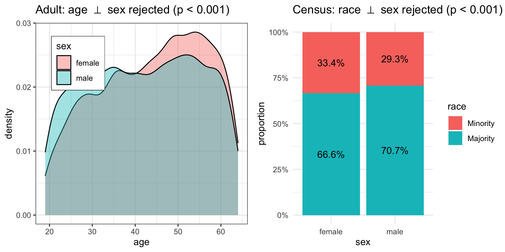

The framework of Causal Fairness Analysis (Plecko and Bareinboim 2022) introduces the Standard Fairness Model (SFM), which is a type of causal diagram with slightly fewer assumptions than the typically used diagrams in the literature (in particular, SFM is a type of clustered diagram (see Anand et al. 2021)). In particular, the SFM can be seen in Figure 1.
Figure 1: Standard Fairness Model
We in particular focus on the bidirected arrow between nodes \(X\) and \(Z\). Such an arrow in particular allows for the possibility that there are variations between \(X\) and \(Z\) that can be left unexplained in the model, or that unmeasured confounders may exist, or that we are dealing with selection bias. Practically speaking, assuming that no bidirected arrows exist is a strong assumption that does not hold in many settings. For instance, consider the widely recognized phenomenon in the fairness literature known as redlining(Zenou and Boccard 2000; Hernandez 2009). In some practical settings, the location where loan applicants live may correlate with their race. Applications might be rejected based on the zip code, disproportionately affecting certain minority groups in the real world.
It has been reported in the literature that correlation between gender and location, or religious and location may possibly exist, and therefore, should be acknowledged through modeling. For instance, the one-child policy affecting mainly urban areas in China had visible effects in terms of shifting the gender ratio towards males (Hesketh, Lu, and Xing 2005; Ding and Hesketh 2006). Beyond race or gender, religious segregation is also a recognized phenomenon in some urban areas (Brimicombe 2007). Again, while we make no claim that location affects race (or religion), or vice-versa, the bidirected arrows give a degree of modeling flexibility that allows for the encoding of such co-variations. Still, this is without making any commitment to whatever historical processes and other complex dynamics that took place and generated such imbalance in the first place. To corroborate this point, consider the following practical investigation.
A data scientist is trying to understand the correlation between the features in the COMPAS dataset. The protected attribute \(X\) is race, and the demographic variables \(Z_1\), \(Z_2\) are age and sex. The data scientist tests two hypotheses, namely: \[\begin{align}
H^{(1)}_0: X \perp\!\!\!\perp Z_1,\\
H^{(2)}_0: X \perp\!\!\!\perp Z_2.
\end{align}\] To do so, the data scientist first loads the COMPAS dataset from the faircause package:
data <-get(data("compas", package ="faircause"))knitr::kable(head(data), caption ="COMPAS dataset.")
COMPAS dataset.
sex
age
race
juv_fel_count
juv_misd_count
juv_other_count
priors_count
c_charge_degree
two_year_recid
Male
69
Non-White
0
0
0
0
F
0
Male
34
Non-White
0
0
0
0
F
1
Male
24
Non-White
0
0
1
4
F
1
Male
23
Non-White
0
1
0
1
F
0
Male
43
Non-White
0
0
0
2
F
0
Male
44
Non-White
0
0
0
0
M
0
After loading the data, the data scientist visualizes the correlations of the variables:
Wilcoxon rank sum test with continuity correction
data: data[data$race == "White", ]$age and data[data$race == "Non-White", ]$age
W = 7027020, p-value < 2.2e-16
alternative hypothesis: true location shift is not equal to 0
In fact, both of the hypotheses are rejected (\(p\)-values \(< 0.001\)). However, possible confounders of this relationship are not measured in the corresponding dataset.
Similarly, the same data scientist is now trying to understand the correlation of the features in the Government Census dataset (we skip the code to avoid repetition). The protected attribute \(X\) is gender, and the demographic variables \(Z_1\), \(Z_2\) are age and race. The data scientist tests the independence of sex and age (\(X \perp\!\!\!\perp Z_1\)), and sex and race (\(X \perp\!\!\!\perp Z_2\)), and both hypotheses are rejected (p-values \(< 0.001\)). Figure 3 shows the associations of the features. Again, possible confounders of this relationship are not measured in the corresponding dataset, meaning that the attribute \(X\) cannot be separated from the confounders \(Z_1, Z_2\) using any of the observed variables.
Wilcoxon rank sum test with continuity correction
data: data[data$sex == "female", ]$age and data[data$sex == "male", ]$age
W = 54018487, p-value < 2.2e-16
alternative hypothesis: true location shift is not equal to 0
a1 <-ggplot(data, aes(x = age, fill = sex)) +geom_density(alpha =0.4) +theme_bw() +theme(legend.position =c(0.2, 0.8),legend.box.background =element_rect() ) +ggtitle(TeX("Adult: age $\\perp$ sex rejected (p < 0.001)"))a2 <-ggplot(data, aes(x = sex, fill = race)) +geom_bar(position ="fill") +geom_text(aes(label =percent(round(after_stat(count)/tapply(after_stat(count), after_stat(x), sum)[after_stat(x)], 4))),stat ="count", position =position_fill(0.5)) +scale_y_continuous(labels = percent) +ylab("proportion") +theme_minimal() +ggtitle(TeX("Census: race $\\perp$ sex rejected (p < 0.001)"))cowplot::plot_grid(a1, a2, ncol = 2L)

Figure 3: Association of X and Z sets on the UCI Adult dataset.
References
Anand, Tara, Adele Ribeiro, Jin Tian, and Elias Bareinboim. 2021. “Effect Identification in Causal Diagrams with Clustered Variables.”
Brimicombe, Allan J. 2007. “Ethnicity, Religion, and Residential Segregation in London: Evidence from a Computational Typology of Minority Communities.”Environment and Planning B: Planning and Design 34 (5): 884–904.
Ding, Qu Jian, and Therese Hesketh. 2006. “Family Size, Fertility Preferences, and Sex Ratio in China in the Era of the One Child Family Policy: Results from National Family Planning and Reproductive Health Survey.” British Medical Journal Publishing Group.
Hernandez, Jesus. 2009. “Redlining Revisited: Mortgage Lending Patterns in Sacramento 1930–2004.”International Journal of Urban and Regional Research 33 (2): 291–313.
Hesketh, Therese, Li Lu, and Zhu Wei Xing. 2005. “The Effect of China’s One-Child Family Policy After 25 Years.”New England Journal of Medicine. Mass Medical Soc.
Plecko, Drago, and Elias Bareinboim. 2022. “Causal Fairness Analysis.”arXiv Preprint arXiv:2207.11385.
Zenou, Yves, and Nicolas Boccard. 2000. “Racial Discrimination and Redlining in Cities.”Journal of Urban Economics 48 (2): 260–85.